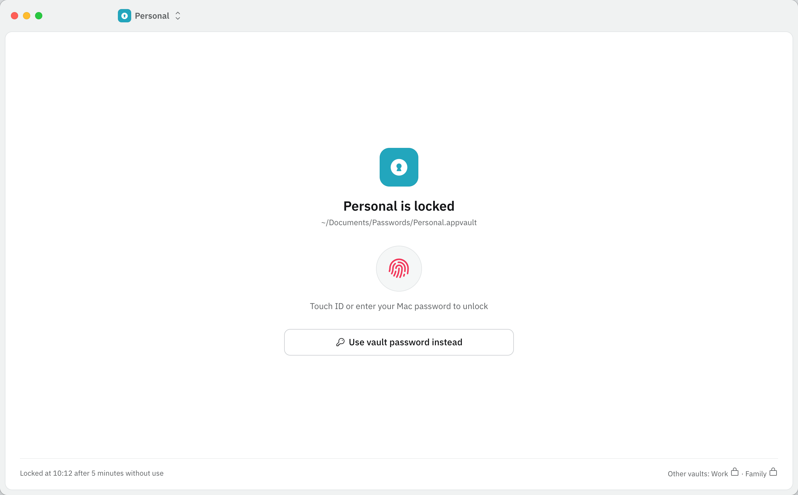
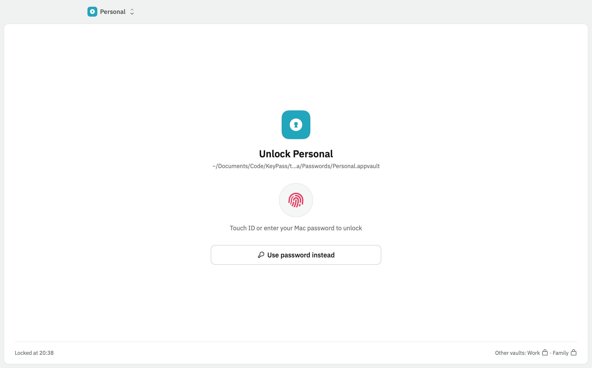
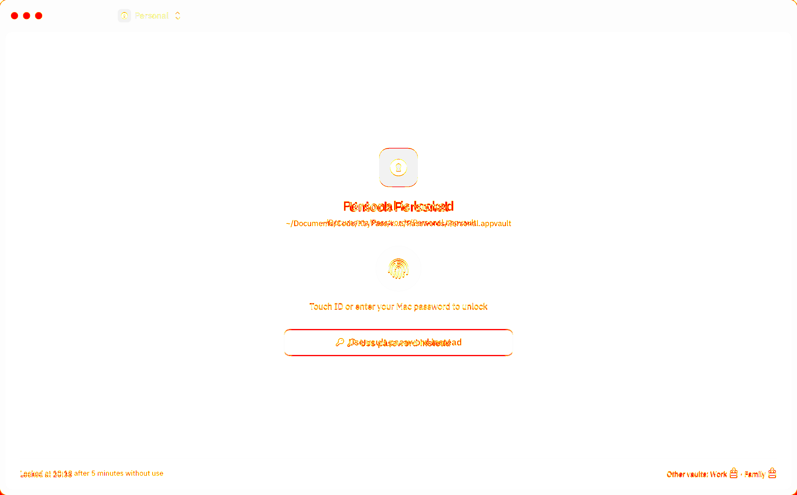
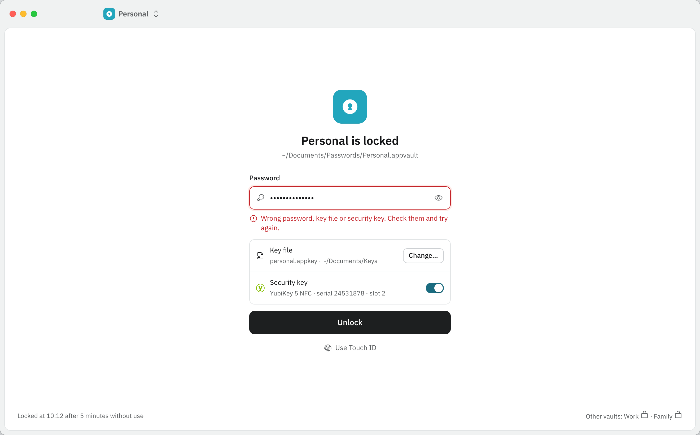
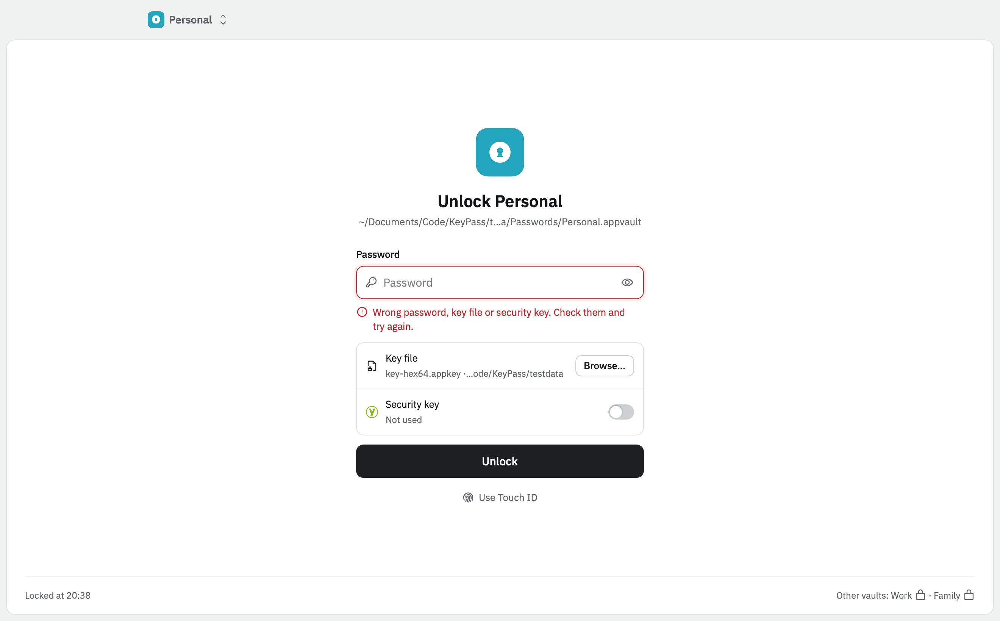
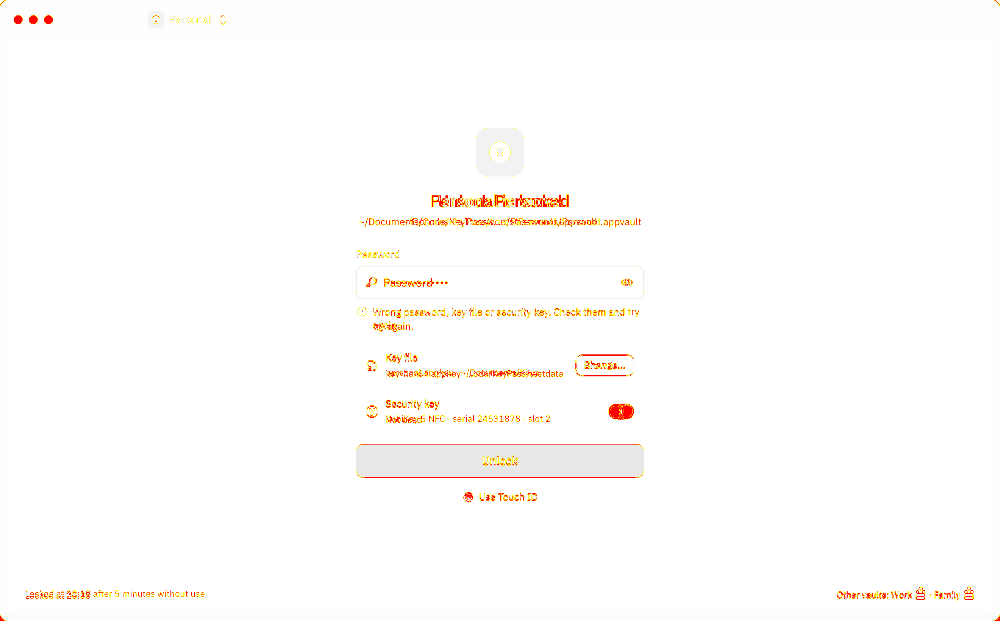
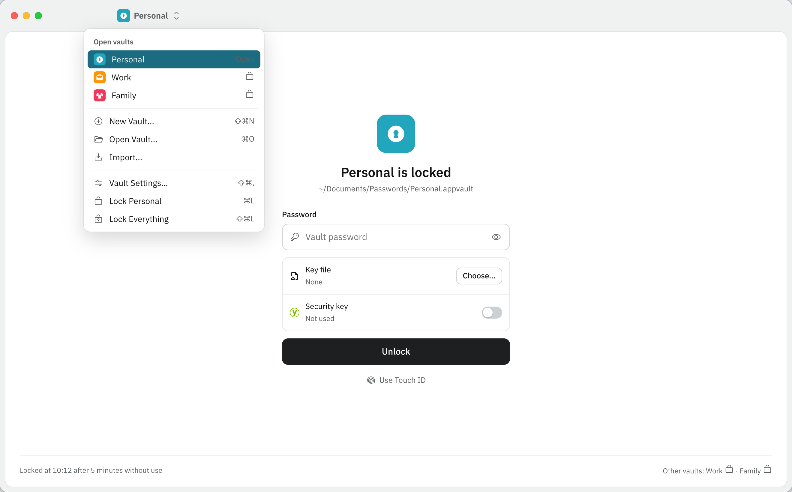
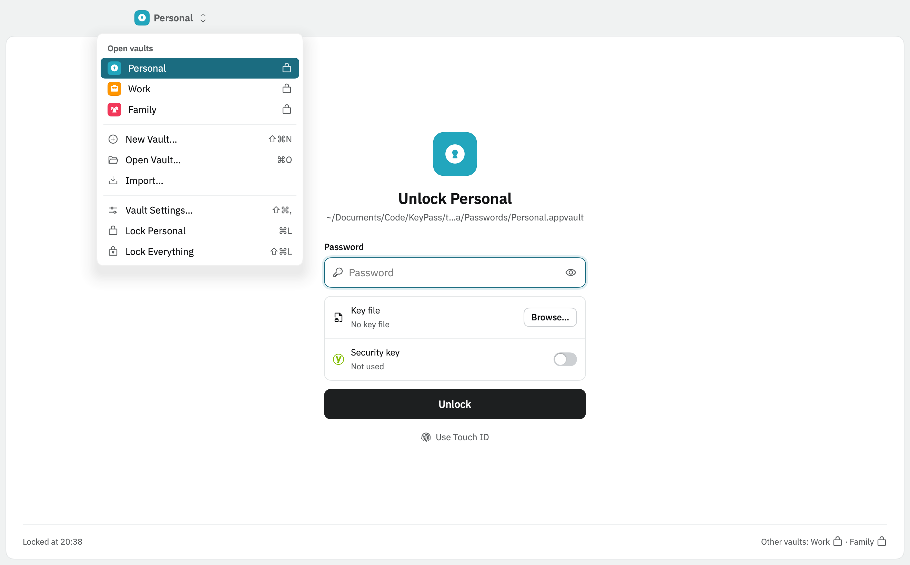
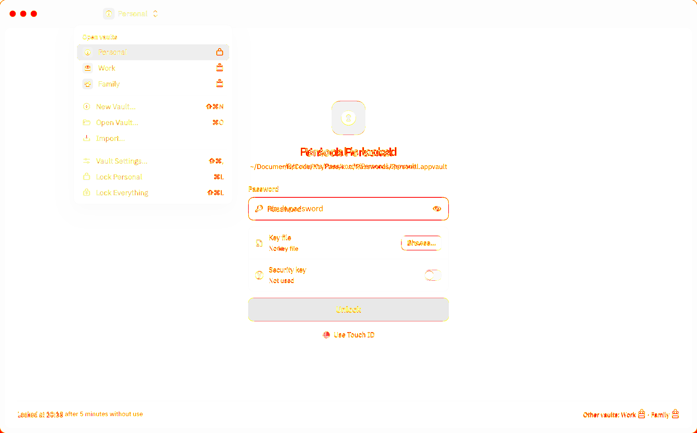

Date 2026-10-28. 4 of 4 built frames PASS. Check tools: pixelmatch 8.0.0, pngjs 7.0.0. Pixel diff threshold 0.1, anti-aliasing ignored. The summary table and the commands are in report.md; the raw numbers in findings.json.
Accepted: "Unlock Personal" (APP-06 UL-TITLE) and "Use password instead" (APP-04.15), LD-163 (4); the footer reason comes with E6-S2 (LD-166, LD-169). Window buttons are drawn by macOS (accepted).
Live, format only: codes, countdowns, the save and lock times, the test copies' paths; LD-166: the FEA-05 bits, the SSH fingerprint, "Saved just now".
Controls of later stories are drawn and disabled with their story in the help text (LD-163); their behaviour waits for those stories.
light

Mockup

App

Diff: 0.53 % changed, 0.11 % outside accepted areas
2. Text: 4 found in the accessibility tree, 3 accepted differences, 1 live values (format), 0 clipped in the mockup, 0 drawn but not in the tree, 0 behind an open menu, 0 missing.
"Locked at 10:12 after 5 minutes without use" → "Locked at 20:38": lock footer reason: comes with E6-S2's idle lock (LD-166, LD-169)
"~/Documents/Passwords/Personal.appvault" → "~/Documents/Code/KeyPass/target/option-a/Passwords/Personal.appvault": vault path: the test copies the demo vaults to target/option-a/Passwords
2. Text: 4 found in the accessibility tree, 3 accepted differences, 1 live values (format), 0 clipped in the mockup, 0 drawn but not in the tree, 0 behind an open menu, 0 missing.
"Locked at 10:12 after 5 minutes without use" → "Locked at 20:38": lock footer reason: comes with E6-S2's idle lock (LD-166, LD-169)
"~/Documents/Passwords/Personal.appvault" → "~/Documents/Code/KeyPass/target/option-a/Passwords/Personal.appvault": vault path: the test copies the demo vaults to target/option-a/Passwords
Accepted: "Unlock Personal", placeholder "Password", key file row in the card's words with the test's key file, security key row of E10 drawn disabled (LD-163 (2), (4)); footer reason with E6-S2; empty field after a failed unlock (APP-06.11, LD-166). The Yubico logo now carries its name.
Live, format only: codes, countdowns, the save and lock times, the test copies' paths; LD-166: the FEA-05 bits, the SSH fingerprint, "Saved just now".
Controls of later stories are drawn and disabled with their story in the help text (LD-163); their behaviour waits for those stories.
light

Mockup

App

Diff: 0.65 % changed, 0.31 % outside accepted areas
2. Text: 11 found in the accessibility tree, 6 accepted differences, 1 live values (format), 0 clipped in the mockup, 0 drawn but not in the tree, 0 behind an open menu, 0 missing.
"~/Documents/Passwords/Personal.appvault" → "~/Documents/Code/KeyPass/target/option-a/Passwords/Personal.appvault": vault path: the test copies the demo vaults to target/option-a/Passwords
2. Text: 11 found in the accessibility tree, 6 accepted differences, 1 live values (format), 0 clipped in the mockup, 0 drawn but not in the tree, 0 behind an open menu, 0 missing.
"~/Documents/Passwords/Personal.appvault" → "~/Documents/Code/KeyPass/target/option-a/Passwords/Personal.appvault": vault path: the test copies the demo vaults to target/option-a/Passwords
7. Accessibility: every control has a name; disabled (later stories): 2.
6. Behaviour
Mockup controls in this frame: 4.
menu=vault "Personal"
sw "Use a security key"
unlock "Unlock"
unlockmode=touch "Use Touch ID"
Tests (ParityTests, offscreen, pressed through the accessibility tree):
pass the shown password has no Copy or Cut, writes nothing out
pass Show password and Hide password switch
pass a wrong password shows M06-06, field cleared
pass the demo password opens the vault
pass Browse… enabled; security key, Touch ID disabled
lock-locked-vault-switcher PASS
Locked · vault switcher · Other vaults stay reachable
Verify notes
Vault menu and its 9 items at 0 pt difference. With the menu open only the menu is in the tree; names behind it are found on the same view without the menu.
Accepted as in the password frame; footer reason with E6-S2.
Closing menus with Escape or a click outside: Mac QA on a real screen (LD-166).
light

Mockup

App

Diff: 0.61 % changed, 0.35 % outside accepted areas
2. Text: 16 found in the accessibility tree, 5 accepted differences, 1 live values (format), 0 clipped in the mockup, 0 drawn but not in the tree, 10 behind an open menu, 0 missing.
"~/Documents/Passwords/Personal.appvault" → "~/Documents/Code/KeyPass/t...a/Passwords/Personal.appvault": vault path: the test copies the demo vaults to target/option-a/Passwords
Drawn, not in the accessibility tree (0)
none
Behind an open modal menu (10)
"Password": not in the tree while the menu is open (VoiceOver stays in the menu); the same view without the menu has it (lock-locked-password-key-file-security-key)
"Key file": not in the tree while the menu is open (VoiceOver stays in the menu); the same view without the menu has it (lock-locked-password-key-file-security-key)
"Security key": not in the tree while the menu is open (VoiceOver stays in the menu); the same view without the menu has it (lock-locked-password-key-file-security-key)
"Not used": not in the tree while the menu is open (VoiceOver stays in the menu); the same view without the menu has it (lock-locked-password-key-file-security-key)
"Unlock": not in the tree while the menu is open (VoiceOver stays in the menu); the same view without the menu has it (lock-locked-password-key-file-security-key)
"Use Touch ID": not in the tree while the menu is open (VoiceOver stays in the menu); the same view without the menu has it (lock-locked-password-key-file-security-key)
"Other vaults: Work · Family": not in the tree while the menu is open (VoiceOver stays in the menu); the same view without the menu has it (lock-locked-password-key-file-security-key)
"Show password": not in the tree while the menu is open (VoiceOver stays in the menu); the same view without the menu has it (lock-locked-password-key-file-security-key)
"Yubico": not in the tree while the menu is open (VoiceOver stays in the menu); the same view without the menu has it (lock-locked-password-key-file-security-key)
"Use a security key": not in the tree while the menu is open (VoiceOver stays in the menu); the same view without the menu has it (lock-locked-password-key-file-security-key)
2. Text: 16 found in the accessibility tree, 5 accepted differences, 1 live values (format), 0 clipped in the mockup, 0 drawn but not in the tree, 10 behind an open menu, 0 missing.
"~/Documents/Passwords/Personal.appvault" → "~/Documents/Code/KeyPass/t...a/Passwords/Personal.appvault": vault path: the test copies the demo vaults to target/option-a/Passwords
Drawn, not in the accessibility tree (0)
none
Behind an open modal menu (10)
"Password": not in the tree while the menu is open (VoiceOver stays in the menu); the same view without the menu has it (lock-locked-password-key-file-security-key)
"Key file": not in the tree while the menu is open (VoiceOver stays in the menu); the same view without the menu has it (lock-locked-password-key-file-security-key)
"Security key": not in the tree while the menu is open (VoiceOver stays in the menu); the same view without the menu has it (lock-locked-password-key-file-security-key)
"Not used": not in the tree while the menu is open (VoiceOver stays in the menu); the same view without the menu has it (lock-locked-password-key-file-security-key)
"Unlock": not in the tree while the menu is open (VoiceOver stays in the menu); the same view without the menu has it (lock-locked-password-key-file-security-key)
"Use Touch ID": not in the tree while the menu is open (VoiceOver stays in the menu); the same view without the menu has it (lock-locked-password-key-file-security-key)
"Other vaults: Work · Family": not in the tree while the menu is open (VoiceOver stays in the menu); the same view without the menu has it (lock-locked-password-key-file-security-key)
"Show password": not in the tree while the menu is open (VoiceOver stays in the menu); the same view without the menu has it (lock-locked-password-key-file-security-key)
"Yubico": not in the tree while the menu is open (VoiceOver stays in the menu); the same view without the menu has it (lock-locked-password-key-file-security-key)
"Use a security key": not in the tree while the menu is open (VoiceOver stays in the menu); the same view without the menu has it (lock-locked-password-key-file-security-key)
2. Text: 16 found in the accessibility tree, 1 accepted differences, 3 live values (format), 0 clipped in the mockup, 0 drawn but not in the tree, 0 behind an open menu, 0 missing.
Missing (0)
none
Accepted (1) and live (3)
"Version 1.0 · open source · GPL-3.0" → "Version 0.1.0 · open source · GPL-3.0": welcome license line and the live version (LD-163 (5))
"~/Documents/Passwords/Personal.appvault" → "~/Documents/Code/KeyPass/target/option-a/Passwords/Personal.appvault": vault path: the test copies the demo vaults to target/option-a/Passwords
"~/Documents/Passwords/Work.appvault" → "~/Documents/Code/KeyPass/target/option-a/Passwords/Work.appvault": vault path: the test copies the demo vaults to target/option-a/Passwords
"~/Library/Mobile Documents/Family.appvault" → "~/Documents/Code/KeyPass/target/option-a/Passwords/Family.appvault": vault path: the test copies the demo vaults to target/option-a/Passwords
2. Text: 16 found in the accessibility tree, 1 accepted differences, 3 live values (format), 0 clipped in the mockup, 0 drawn but not in the tree, 0 behind an open menu, 0 missing.
Missing (0)
none
Accepted (1) and live (3)
"Version 1.0 · open source · GPL-3.0" → "Version 0.1.0 · open source · GPL-3.0": welcome license line and the live version (LD-163 (5))
"~/Documents/Passwords/Personal.appvault" → "~/Documents/Code/KeyPass/target/option-a/Passwords/Personal.appvault": vault path: the test copies the demo vaults to target/option-a/Passwords
"~/Documents/Passwords/Work.appvault" → "~/Documents/Code/KeyPass/target/option-a/Passwords/Work.appvault": vault path: the test copies the demo vaults to target/option-a/Passwords
"~/Library/Mobile Documents/Family.appvault" → "~/Documents/Code/KeyPass/target/option-a/Passwords/Family.appvault": vault path: the test copies the demo vaults to target/option-a/Passwords